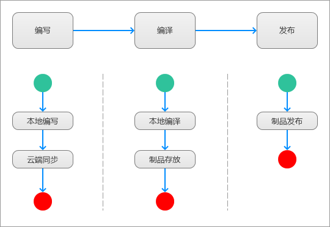

个人知识博客搭建方案
下面记录一下我自己通过mdbook+Github搭建自己知识管理体系的过程。
说在前面
在开始说明我使用mdbook的方法之前，我想先整理一下自己对于知识管理工具的一些需求，以及我最后找到的解决方案。
我对于个人知识管理的需求，主要有几点：
- 支持Markdown
- 支持文档层级
- 支持本地编辑
- 支持云端同步
- 支持发布
根据上述的几点需求，我最终决定使用Github和mdbook来解决，原因主要是：
- Github支持本地和云端同步，这样就解决了我本地编辑和远端同步的需求
- mdbook支持将Markdown文件编译为静态文件，解决了原始Markdown文件查看不方便的问题
- Github Pages支持对编译后的静态文件进行发表，这样就解决了分享和远程查看的问题
整体方案

上图所示，是我设计的个人博客从编写到发布的主体流程，主要包括3个阶段：
- 编写
- 本地编写：本地编写Markdown文件
- 云端同步：同步本地Markdown到云端（非必须，我为了跨设备编辑，加入了此步骤）
- 编译
- 本地编译：在本将Markdown文件编译为静态站点文件
- 制品存放：将编译得到的制品文件存放至特定仓库（我个人使用Github Pages发布，所以要把制品文件存放到Github仓库下docs目录）
- 发布
- 制品发布：将静态文件发布到服务器（我个人使用Github Pages发布，所以只要把仓库Push到远程仓库即可）
操作流程
如果现在准备开始一个新的博客，可以按照以下流程来进行操作。
Step 1 创建源文件存放仓库
在Github上创建1个仓库，用来存放Markdown源文件。
存放Markdown源文件的仓库可以设置为私有仓库，也可以设置为公开仓库，取决于个人是否愿意公开Markdown源文件。
也可以把Markdown源文件和制品文件放在一个仓库，如果存放在同一个仓库，源文件一般存放于
src目录。
我是使用Github来同步源文件的，所以需要创建Github仓库来存放源文件，如果有其他渠道进行同步（例如：OneDrive），那么可以忽略此步骤。
创建Github仓库的详细操作方法，如下：
01. 注册并登录Github
访问Github：快速跳转
注册一个Github账号，然后登入系统。
02. 安装Github客户端
在本地安装Git客户端，市面上有很多很好用的Git客户端，我使用的是Github官方的客户端。
其实我很推荐Tower这款Git客户端，无奈是个收费软件，使用了一段时间破解版，后来无意更新了一下，就不能再继续使用了。
03. Git客户端登录Github账号
在本地的Github客户端登录之前注册的Github账号。
04. 创建Git仓库
使用Github客户端，在本地创建一个仓库，仓库名字根据实际需要来设置。
05. 同步仓库到Github远程仓库
使用Github客户端，将仓库push到云端，直接使用master分支即可。
Step 2 创建制品文件发布仓库
在Github上创建一个仓库，用来发布编译得到的制品文件。
要是有Github仓库来发布制品文件，首先需要创建一个Github仓库，具体操作方法可以参考上方介绍，除此之外，还需要对仓库进行一些配置，包括：
01. 配置docs目录
在仓库下创建docs目录。
因为Github Pages只能设置为仓库根目录或者docs目录，所以，如果仓库某个分支，除了存放静态文件外，还需要存储其他文件（例如：Markdown源文件），就需要创建docs目录，用于存放后续mdbook编译得到的静态文件。
如果仓库的某个分支只存放静态文件，那么，直接将Github Pages设置为对应分支根目录即可，不需要设置docs目录。
02. 开启Github Pages
需要去web端进行关于Github Pages的配置，如下：
- 登录Github
- 进入仓库test
- 进入菜单Setting
- 确认仓库已经被设置为Public
- 找到Github Pages，设置分支为
master，设置目录为docs
Step 3 mdbook初始化
打开命令行，cd到本地存放Markdown源文件的目录，执行mdbook初始化命令：
#![allow(unused)] fn main() { mdbook init }
关于mdbook详细的使用方法，可以参考：mdbook使用方法
Step 4 修改mdbook配置文件
因为下面两个原因，需要修改mdbook配置文件book.toml：
- Markdown源文件和编译得到的制品文件存放目录不在同一个目录下，跟默认配置不一致
- 源文件存放目录也不是默认的
src目录
修改的内容主要是：
-
修改源文件存放目录为实际目录（SUMMARY文件所在目录），避免后续的编译步骤失败
-
加入编译制品文件输出目录配置：
[build] build-dir = "../abc/docs"按照上面的配置，编译得到的制品会存放在
book.toml文件所在目录下的docs目录。因为我使用了单独的仓库（abc）来存放制品文件，所以，这里需要把制品文件输出目录更改为对应仓库下的docs目录。
Step 5 编写Markdown文件
上述步骤完成后，就可以在本地编写Markdown文件了。
Markdown编辑器有很多，我个人推荐：Typora
更多Markdown编辑器推荐和对比：Markdown编辑器
需要注意的时，更新Markdown文件后，要检查SUMMARY文件是否及时更新。
Tips：在编写内容时，可以先更新SUMMARY文件，然后执行编译命令，自动补全缺失目录，然后再去编写实际的文件内容。
Step 6 编译
编译操作，就是将Markdown源文件编译为静态文件的过程，具体的方法为：
- 打开命令行，cd到
book.toml文件所在的目录abc - 在终端里输入编译命令，有两个可用的命令，对应的命令和效果，如下：
- mdbook build：根据book.toml文件中配置的源文件目录，找到源文件目录，然后在原文件目录下找到SUMMARY文件，根据SUMMARY文件的内容，将SUMMARY文件涉及到的目录下的Markdown文件编译为静态文件，然后，编译得到的静态文件默认放入
abc/book目录，如果abc/book目录不存在，那么会自动创建该目录，并且将静态文件放入该目录 - mdbook buid -d docs：该命令可以指定编译后的制品文件的存放目录，前半部分过程跟
mdbook build一致，只是后面存放静态文件的时候，会存放到abc/docs目录下，如果abc/docs不存在，也会自动创建该目录，然后将静态文件放入该目录
- mdbook build：根据book.toml文件中配置的源文件目录，找到源文件目录，然后在原文件目录下找到SUMMARY文件，根据SUMMARY文件的内容，将SUMMARY文件涉及到的目录下的Markdown文件编译为静态文件，然后，编译得到的静态文件默认放入
因为在Step 4中，已经配置了制品输出目录，所以，在这一步执行mdbook build命令后，制品文件应该会直接输出到制品文件发布仓库下的docs目录，编译命令执行完成后，最好检查一下制品文件输出是否正确。
如果修改制品文件输出目录配置，也可以直接把编译得到的制品文件复制到其他目录，再用于发布。
Tips：在book.toml文件中，添加编译文件输出目录配置参数，那么，每次只需执行
mdbook build命令，编译得到的静态文件也会放入到指定目录中，因此，mdbook build -d docs也可以通过以下方式来完成：
book.toml文件中添加以下内容：
[build] build-dir = "docs"打开终端，执行
mdbook build
Step 7 Push
编译完成后，将存放制品文件的仓库Push到Github。
Push完成后，访问Github仓库的Github Pages链接，就可以看到最终的书籍效果了。
我这里说明的方法，是直接将编译后的文件Push到Github，然后通过Github Pages来查看最红的书籍效果；这里再补充一个本地查看书籍效果的方法：
编译环节完成后，在源目录下执行命令
mdbook serve，执行成功后，在浏览器地址栏输入http://localhost:3000，也可以查看书籍效果。通常，会现在本地查看效果，符合预期，才会Push到Github。
扩展内容
基于Gitlab来搭建
上面提到的是基于Github使用方法，通常，在公司内部，都是使用的Gitlab，这里，我说明一下基于Gitlab的使用方法：在本地编译好静态文件，然后Push到Gitlab仓库的public目录，再通过Gitlab Pages来访问。
相关链接：Github Pages & Gitlab Pages
在这里，我主要想记录一下我在360企业安全工作期间，使用Gitlab来自动触发编译和发布的方法。
Gitlab相关操作
Step 1 创建Gitlab仓库
在Gitlab上创建用户发布mdbook的仓库。
Step 2 添加public目录
在仓库中添加public目录。
Step 3 将静态文件放入到public目录
将mdbook编译得到的静态文件，存放到master分支public目录。
Step 4 添加ci文件
在仓库目录下，添加ci文件，用于触发gitlab编译任务。
文件名为.gitlab-ci.yml，文件内容为：
pages:
stage: deploy
image: mdbook镜像地址
script:
- mdbook build -d public
artifacts:
paths:
- public
only:
- master
上述配置完成后，只需要提交源文件变更，就会自动触发Gitlab ci构建，构建成功够，就可以通过Gitlab Pages来访问静态文件了。
自动化
上面提到的方法，自动化程度很弱：
- 本地编写完成Markdown文件后，需要在本地手动执行编译
- 如果不希望将Markdown文件和静态文件放到一起，那么还需要单独讲静态文件放到拿出来进行发布
- 手动拷贝静态文件到docs或者public目录
- 手动部署静态文件到服务器
基于之前在360的经验，其实整个过程可以实现自动化，大概的思路如下：
- 创建GitHub/Gitlab项目
- 将Markdown文件放到Git项目中
- Git Push后触发Github工作流/Gitlab ci流水线
- 工作流/流水线自动执行mdbook编译
- 自动将编译制品存放到指定目录
基于上述思路，我只需要编写Markdown文件，然后Push到远程仓库即可，确实减少了很多重复性工作，对于效率有提升。
通常来说，如果实现上述的自动化，一般会把Markdown源文件和编译后的静态文件放在同一个仓库下，减少自动化流程的配置；但是，也可以设置源文件和静态文件存放在不同仓库，这样的话，配置密钥会麻烦一点。
如果不实现自动化，自己手动处理，那么只需要在
book.toml文件中配置编译制品输出目录，就可以实现源文件和静态文件分离的效果了。
基于Github Action的自动化
补充自动化的方法。